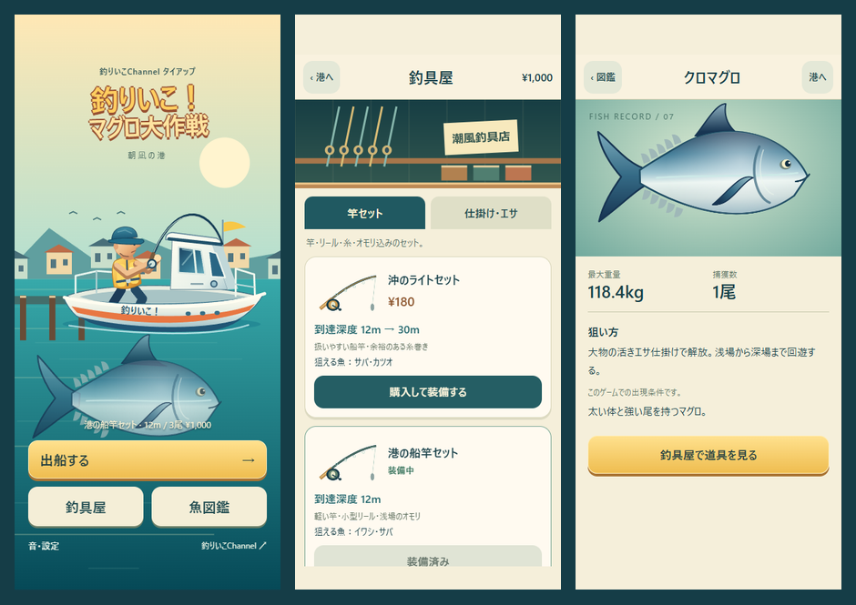

港・釣具屋・魚図鑑の候補
公開トップを維持したレビュー用候補です。画像・動画はすべて自作ゲームの実画面です。
候補で遊ぶ →港・釣具屋・図鑑

購入画面の所持金・図鑑記録は検査用データです。個人の保存データは含みません。操作は経過時間に応じたタッチ入力。初期は約11.7秒、中盤は約19.1秒、深場は約32.8秒。深場は通常報酬で31投進めた保存を使用しています。
Windows Chromeのスマホ幅模擬検査です。iPhone実機・TestFlightは未実施。参考作品の画像・キャラクター・音源は転載していません。音源クレジットは こちら。